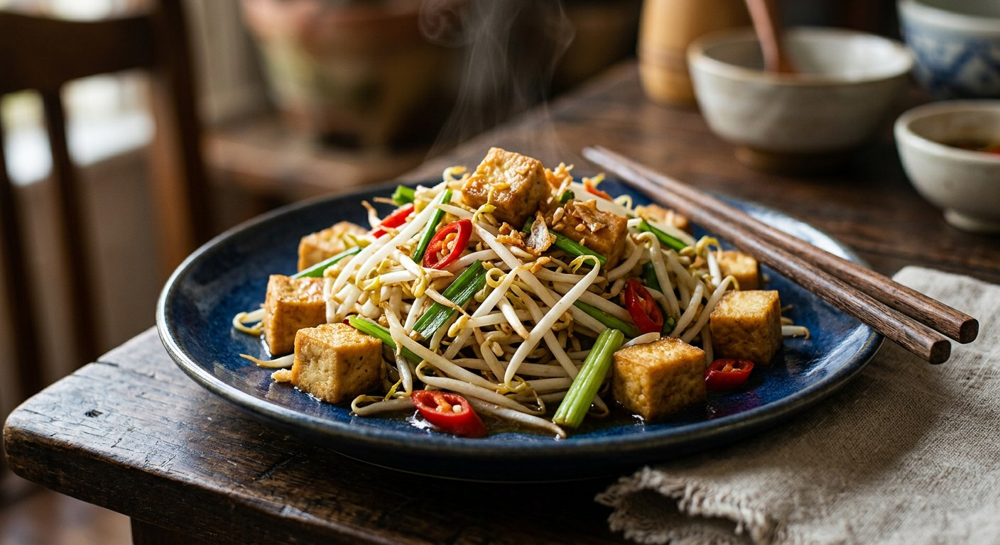

Bean sprouts, a screaming-hot wok, and about five minutes — the crisp, garlicky stir-fry that every khao tom (rice soup) shop in Thailand keeps on the side of the table.

ผัดถั่วงอก takes its name from its hero — ถั่วงอก, the mung bean sprout, literally "the bean that sprouted" — and its entire recipe is a lesson in heat. Aroifin's mimi, who spent her own failed batches learning it, puts the whole dish in one sentence: the secret is ไฟ and เวลา — fire and time. The wok must be at full blast, the sprouts must go in and come out within minutes, and the moment their white bodies turn translucent, the pan comes off. A second too long and the crunch is gone; that is the entire difference between a restaurant plate and a sad, wilted school-dinner version.
This is the workhorse of the khao tom circuit — the late-night rice-soup shops where cooks slide a plate of sprouts beside the congee — and a standard อาหารตามสั่ง order, the made-to-order counter menu of a hundred thousand Thai shophouses. It is also quietly elastic: the same wok technique carries fried tofu in the vegetarian version, tender pork or minced pork in the meat versions, and even cubes of cooked pig's blood in the TrueID variant aimed at families. Whatever goes in, the sprouts stay the point — Kapook, whose version has been read over two hundred thousand times, markets it on the crunch alone: เคี้ยวกรอบ, chew it crisp.
Like most great Thai dishes it is a frame, not a formula. The green can be Chinese celery or spring onion, the chilli is optional, the sauce is whichever school your cook belongs to — oyster sauce, or the mushroom sauces of the jay (vegetarian) kitchens. What no school permits is a soft bean sprout.
| Thai | English | Amount |
|---|---|---|
| ถั่วงอก | Bean sprouts | 300 g |
| เต้าหู้ทอดหั่นเต๋า | Fried tofu, cubed | as liked |
| ขึ้นฉ่าย | Chinese celery | 3 stalks |
| กระเทียมสับ | Garlic, minced | 1 tbsp |
| พริกแดงจินดา | Red jinda chillies | as liked |
| ซีอิ๊วขาวเห็ดหอม | Mushroom soy sauce | 1 tbsp |
| ซอสเห็ดหอม | Mushroom sauce | 1½ tbsp |
| น้ำตาล | Sugar | ½ tsp |
| พริกไทยป่น | Ground white pepper | ¼ tsp |
| ซอสเต้าเจี้ยว | Tao jiao (yellow soybean) sauce | 1 tbsp (in the method) |
The oyster-sauce school: Kapook stir-fries fried firm tofu with 2 tbsp oyster sauce, 1 tbsp light soy, 1 tbsp sugar and half a cup of water, finishing with celery. Wongnai's pork version swaps in 100 g tender pork, 2 tsp sugar, 1 tbsp oyster sauce and 1 tsp fish sauce. TrueID's family bowl adds 200 g minced pork and two cubes of cooked chicken blood, seasoned with fish sauce and light soy. The home-cook version (Pim): 200 g sprouts, 70 g fried tofu, ten small garlic cloves, 1 tbsp oyster sauce and ¾ tbsp light soy — with her own trick below.
Pim's trick (Pim.in.th): toss the raw sprouts in a bowl with the chillies, oyster sauce, light soy and sugar before the wok is hot — then crank the heat and dump the whole bowl in at once. You hear the sizzle, and nothing sits too long while you reach for bottles. She also drains the washed sprouts thoroughly first; wet sprouts steam instead of fry.
The sauce school. Kapook, Pim and Wongnai build on oyster sauce; TrueID seasons with fish sauce and light soy. Aroifin's is the vegetarian school — mushroom soy and mushroom sauce, no fish products at all. Wongnai and TrueID are the only ones adding fish sauce.
The water. Kapook adds half a cup of water for a saucy, rice-soaking plate and Wongnai adds water too; Pim adds just 2 tablespoons of stock (4 if you like your sprouts soft) and Aroifin and TrueID add none — the sprouts' own liquid is the sauce.
The protein. Tofu in Kapook, Pim and Aroifin; tender pork in Wongnai; minced pork plus cubes of cooked chicken blood in TrueID (which calls the dish เลือดหมู, pig's blood, but lists เลือดไก่). Pim says the tofu slot accepts pork, squid, prawn or chicken freely.
The green. Chinese celery (ขึ้นฉ่าย) in Aroifin, Pim and Kapook; spring onion (ต้นหอม) in Wongnai and TrueID. Both go in at the end, and both are there for crunch and aroma, not bulk.
The chilli. Optional everywhere, in three registers: smashed bird's eye chillies (Kapook), five red bird's eye — or two, or none — (Pim), and red jinda "as you like" (Aroifin).
Aroifin against itself. Its own method says to add ซอสเต้าเจี้ยว, tao jiao sauce, but the ingredient list never includes it. A faithful reading adds the spoonful; the dish works without it.
Prep fuss. Pim bothers to pick the husks off the sprouts and drain them dry, and says trimming the roots is unnecessary for this dish. No other source mentions prep at all.
This recipe is translated from the following Thai-language sources. Where they disagree, we've said so.
1. Aroifin — "วิธีทำ ผัดถั่วงอก แบบร้านดัง กรอบเด้ง หอมกระทะ สีสวย ไม่เหี่ยว ทำง่ายมาก" by mimi (the recipe used here) — aroifin.com
2. Kapook — "ผัดถั่วงอกเต้าหู้ เมนูผัดผักมีประโยชน์ทำง่าย เคี้ยวกรอบ" (the oyster-sauce version) — cooking.kapook.com
3. Wongnai — "หมูนุ่มผัดถั่วงอก" by ชิมทั่วไทยว่างเมื่อไหร่เข้าครัว (the pork version) — wongnai.com
4. TrueID Food — "แจกสูตร ผัดถั่วงอก ใส่เลือดหมู เมนูอร่อย ทำง่าย มีประโยชน์" (from TomJoke FoodTV; the minced pork and blood-cube bowl) — food.trueid.net
5. Pim.in.th (ครัวบ้านพิม) — "ผัดถั่วงอกกับเต้าหู้ทอด" (the home-cook bowl toss and the khao tom service) — pim.in.th